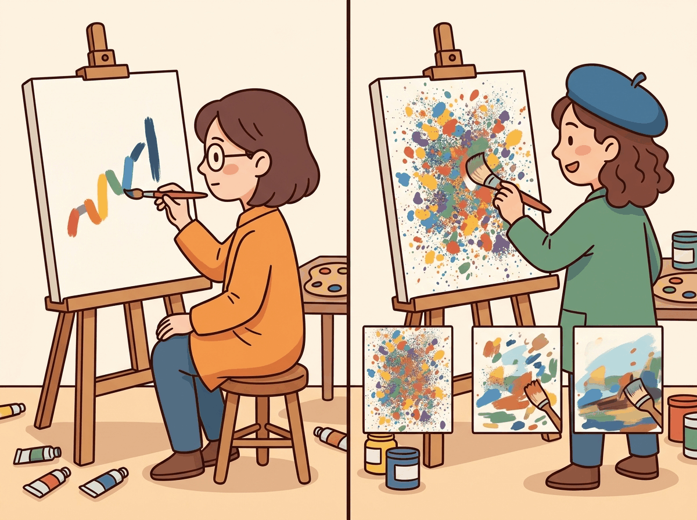

Autoregressive models generate left to right. Diffusion models generate everywhere at once, like a toddler with finger paint.
Spectra AI Agent
Prerequisites
This section assumes you are familiar with autoregressive decoding from Sections 5.1 and 5.2, and the Transformer architecture from Section 4.1. Awareness of image diffusion models (DALL-E, Stable Diffusion) provides useful intuition but is not required. This is a research-focused section covering an evolving area of the field.
Every technique we have studied so far in this chapter (from greedy search in Section 5.1 through advanced methods in Section 5.3) generates text one token at a time, left to right. This autoregressive constraint means that generating a 1,000-token response requires 1,000 sequential forward passes, and no amount of parallelism can change that fundamental bottleneck. Diffusion-based language models break this constraint entirely. Inspired by the diffusion models that revolutionized image generation (DALL-E, Stable Diffusion, Midjourney), these models generate all tokens simultaneously through a process of iterative denoising. This section explores how discrete diffusion works for text, the key models pushing this frontier, and the advantages and limitations of this paradigm.

This section covers an active and rapidly evolving research area. The models and results discussed here represent the state of the art as of early 2026, but the field is moving quickly. Treat this material as a snapshot of a fast-developing landscape rather than a settled body of knowledge.
1. From Continuous to Discrete Diffusion ADVANCED
A Quick Review: Diffusion in Images
In image diffusion models, the forward process gradually adds Gaussian noise to an image over many steps until it becomes pure noise. The reverse process learns to denoise step by step, recovering the original image. At generation time, you start from random noise and iteratively denoise to produce a new image. This works beautifully because pixel values are continuous, and Gaussian noise is a natural perturbation in continuous space.
Text, however, is discrete: each position holds a token from a finite vocabulary (e.g., 50,000 words). You cannot add Gaussian noise to the word "cat" in any meaningful sense. This fundamental difference requires a completely different formulation of the diffusion process.
Who: A research engineering team at a developer tools company investigating faster code completion for their IDE plugin.
Situation: Their existing autoregressive code completion model generated suggestions one token at a time, resulting in noticeable latency (200+ ms) for multi-line completions that frustrated users.
Problem: Users expected near-instant suggestions for common patterns like filling in function bodies or completing boilerplate code, but autoregressive decoding could not generate 50+ tokens fast enough.
Dilemma: Speculative decoding helped but still required sequential verification. Diffusion models offered true parallel generation, but they were less mature for code and harder to control for syntactic correctness.
Decision: The team prototyped a discrete diffusion model (MDLM-based) for infilling tasks, while keeping their autoregressive model for general completions.
How: They trained a discrete absorbing diffusion model on their code corpus, focusing on the infilling task (predicting masked spans within function bodies). They used 10 denoising steps at inference, generating all tokens in parallel at each step.
Result: The diffusion model achieved 3.2x faster generation for infilling tasks of 20 to 80 tokens, with syntactic correctness within 4% of the autoregressive baseline. User satisfaction scores for multi-line completions improved by 18%.
Lesson: Diffusion models excel at tasks where the output length is known and parallel generation matters, but autoregressive models remain superior for open-ended, variable-length generation.
Discrete Diffusion for Text
Instead of adding continuous noise, discrete diffusion corrupts tokens. The most common approach replaces tokens with a special [MASK] token (absorbing diffusion) or with random tokens from the vocabulary (uniform diffusion). Over many forward steps, a clean sentence becomes a sequence of masked or random tokens. The reverse process learns to recover the original tokens from this corrupted state.
2. Key Models and Approaches ADVANCED
Masked Diffusion Language Model (MDLM) by Sahoo et al. (2024) provides a clean theoretical framework connecting masked language modeling (like BERT) with continuous-time diffusion. The key insight is that BERT-style masked prediction can be viewed as a single-step diffusion process, and extending it to multiple steps with a proper noise schedule yields a full generative model. MDLM achieves competitive perplexity with autoregressive models on standard benchmarks while enabling parallel generation.
Score Entropy Discrete Diffusion (SEDD) by Lou et al. (2024) introduces a score-based framework for discrete diffusion. Instead of directly predicting denoised tokens, SEDD learns a "score function" that describes how the probability of each token changes as noise is added. This is analogous to score-matching in continuous diffusion and provides a principled training objective. SEDD achieves strong results on text generation and demonstrates the viability of score-based approaches in discrete spaces.
LLaDA (Large Language Diffusion with mAsking, 2025) scales masked diffusion to 8 billion parameters, showing that discrete diffusion models can match autoregressive models in instruction following and reasoning tasks when trained at sufficient scale. Dream (Diffusion Reasoning Model, 2025) extends this with a planner-guided denoising approach that improves coherence for long-form generation. Both models demonstrate that the quality gap between diffusion and autoregressive text generation is closing rapidly.
Comparison of Approaches
| Model | Noise Type | Key Innovation | Scale |
|---|---|---|---|
| MDLM | Absorbing (mask) | Continuous-time diffusion with BERT-like training | Up to 1.1B |
| SEDD | Absorbing (mask) | Score-matching objective for discrete tokens | Up to 1.1B |
| LLaDA | Absorbing (mask) | Scaling to 8B with instruction tuning | 8B |
| Dream | Absorbing (mask) | Planner-guided coherent denoising | 7B |
3. Parallel Generation: The Speed Advantage ADVANCED
Diffusion models for text generation borrow their core idea from image generation, where you start with pure noise and gradually refine it into a coherent picture. Applying this to language is like sculpting a sentence out of alphabet soup: you start with random letters and iteratively rearrange them until something meaningful emerges.
The most exciting property of diffusion language models is parallel token generation. In autoregressive models, generating N tokens requires N sequential forward passes. Each pass depends on the output of the previous one, creating an inherent sequential bottleneck that limits throughput regardless of hardware.
Diffusion models sidestep this entirely. At each denoising step, the model predicts all positions simultaneously. A 1,000-token output might require only 20 to 50 denoising steps, where each step processes the entire sequence in parallel. On modern GPU hardware with massive parallel processing capability, this can translate to order-of-magnitude latency reductions for long outputs. Code Fragment 5.4.1 below puts this into practice.
# Conceptual comparison of generation steps
import numpy as np
def compare_generation_steps(sequence_lengths, diffusion_steps=30):
"""Compare sequential steps needed for AR vs diffusion generation."""
print(f"{' Length':>8s} | {'AR Steps':>10s} | {'Diffusion Steps':>16s} | {'Speedup':>8s}")
print("-" * 52)
for length in sequence_lengths:
ar_steps = length # one forward pass per token
diff_steps = diffusion_steps # fixed number of denoising steps
speedup = ar_steps / diff_steps
print(f"{length:>8d} | {ar_steps:>10d} | {diff_steps:>16d} | {speedup:>7.1f}x")
compare_generation_steps([50, 200, 500, 1000, 4000])The speedup grows linearly with output length because autoregressive models scale linearly while diffusion models use a fixed number of steps. For a 4,000-token output, the theoretical speedup is over 100x in sequential steps. Of course, each diffusion step processes the entire sequence (which is more expensive per step than a single autoregressive step), so the wall-clock speedup is smaller, typically 3x to 10x for long sequences. Nevertheless, this represents a fundamental architectural advantage. Code Fragment 5.4.2 below puts this into practice.
# Simplified discrete diffusion process (conceptual)
import torch
def simulate_diffusion_generation(seq_length, vocab_size, num_steps=20):
"""
Simulate the discrete diffusion generation process.
At each step, the model predicts all masked positions simultaneously.
We unmask a fraction of positions per step.
"""
MASK_TOKEN = vocab_size # special mask token ID
# Start fully masked
sequence = torch.full((seq_length,), MASK_TOKEN)
tokens_per_step = max(1, seq_length // num_steps)
print(f"Generating {seq_length} tokens in {num_steps} parallel steps\n")
for step in range(num_steps):
# Find masked positions
masked_positions = (sequence == MASK_TOKEN).nonzero(as_tuple=True)[0]
if len(masked_positions) == 0:
break
# "Model prediction": in reality, a neural network predicts all positions
# Here we simulate by filling with random tokens
n_to_unmask = min(tokens_per_step, len(masked_positions))
# Unmask positions with highest "confidence" (simulated)
chosen = masked_positions[torch.randperm(len(masked_positions))[:n_to_unmask]]
sequence[chosen] = torch.randint(0, vocab_size, (n_to_unmask,))
n_remaining = (sequence == MASK_TOKEN).sum().item()
pct_done = 100 * (1 - n_remaining / seq_length)
print(f"Step {step+1:2d}: unmasked {n_to_unmask:3d} tokens | {pct_done:5.1f}% complete | {n_remaining:3d} masked")
return sequence
result = simulate_diffusion_generation(seq_length=100, vocab_size=50000, num_steps=10)4. Gemini Diffusion RESEARCH
Google DeepMind's Gemini Diffusion paradigm applies discrete diffusion at the scale of frontier models. While full architectural details remain proprietary, the announced approach combines discrete diffusion with several innovations: adaptive step scheduling (using more denoising steps for complex passages and fewer for simple ones), hierarchical denoising (coarse structure first, fine details later), and integration with the Gemini model family's multimodal capabilities. Early benchmarks suggest latency reductions of 5x to 10x for long-form generation compared to autoregressive Gemini models, with quality approaching (but not yet matching) the autoregressive versions on reasoning-heavy tasks.
The Gemini Diffusion approach represents the first serious industrial investment in diffusion-based text generation at frontier scale. Key reported characteristics include:
- Adaptive denoising schedules: The number of denoising steps is not fixed but varies based on the complexity of what is being generated. Factual recall might need only a few steps, while multi-step reasoning might need dozens.
- Confidence-ordered unmasking: Tokens the model is most confident about are unmasked first, allowing later steps to condition on the high-confidence "skeleton" of the output.
- Hybrid autoregressive-diffusion: Some implementations use autoregressive generation for the first few tokens (establishing topic and tone) and then switch to diffusion for the bulk of the output.
5. Advantages and Limitations ADVANCED
The Quality Gap for Reasoning
The most significant current limitation of diffusion language models is their performance on tasks requiring complex multi-step reasoning. Autoregressive models naturally "think step by step" because each token is generated in sequence, allowing each step to build on the previous. Diffusion models generate all positions in parallel, which makes it harder to enforce logical dependencies between distant parts of the output. For tasks like mathematical proofs, code generation, and chain-of-thought reasoning, autoregressive models still hold a significant advantage.
The quality gap is not fundamental but practical. Autoregressive models have had years of optimization, scaling, and alignment research (RLHF, DPO, constitutional AI). Diffusion language models are still in their early stages. The trajectory of improvement suggests that much of the gap may close as researchers develop diffusion-specific alignment techniques, better noise schedules, and larger-scale training.
6. TraceRL: Reinforcement Learning for Diffusion LLMs RESEARCH
TraceRL addresses one of the biggest open problems in diffusion language models: how to apply reinforcement learning from human feedback (RLHF) or other reward-based training. In autoregressive models, RLHF is straightforward because each token is a discrete action in a sequential decision process. In diffusion models, the "action" at each step is a parallel update to all positions, making standard RL algorithms inapplicable. TraceRL introduces a "trace-based" reward attribution that propagates reward signals back through the denoising trajectory, enabling effective RL post-training for diffusion language models. Results show significant improvements in instruction following and helpfulness, narrowing the gap with RLHF-trained autoregressive models.
The TraceRL approach works by treating the entire denoising trajectory as a sequence of decisions:
- Generate a complete denoising trajectory: from fully masked to final output, recording the decisions at each step
- Score the final output using a reward model (the same kind used in autoregressive RLHF)
- Attribute the reward back to each denoising step using a credit assignment mechanism inspired by policy gradient methods
- Update the model to increase the probability of denoising trajectories that led to high-reward outputs
This is conceptually similar to how REINFORCE or PPO work in autoregressive models, but adapted for the parallel, iterative structure of diffusion. The "trace" in TraceRL refers to the recorded sequence of denoising steps, which serves as the equivalent of a token-by-token trajectory in autoregressive generation. Code Fragment 5.4.3 below puts this into practice.
# Conceptual pseudocode for TraceRL training loop
# (simplified for illustrative purposes)
def trace_rl_training_step(diffusion_model, reward_model, prompt):
"""One step of TraceRL training (conceptual)."""
# 1. Generate a denoising trajectory
trajectory = []
x_t = initialize_fully_masked(prompt)
for t in reversed(range(T)):
# Model predicts which tokens to unmask and what they should be
predictions, log_probs = diffusion_model.denoise_step(x_t, t)
trajectory.append({"step": t, "log_probs": log_probs, "state": x_t})
x_t = apply_predictions(x_t, predictions)
# 2. Score the final output
final_text = x_t
reward = reward_model(prompt, final_text)
# 3. Compute policy gradient with reward attribution
loss = 0
for step_info in trajectory:
# Attribute reward to each step (with discount)
step_reward = attribute_reward(reward, step_info["step"], T)
loss -= step_reward * step_info["log_probs"].mean()
# 4. Update model
loss.backward()
optimizer.step()
return reward
# This enables RLHF-style training for diffusion language models,
# previously an unsolved problem.
print("TraceRL: enables reward-based training for diffusion LLMs")
print("Key contribution: credit assignment across parallel denoising steps")7. The Road Ahead RESEARCH
Diffusion-based language models are at a similar stage to where autoregressive transformers were around 2018 to 2019: the fundamental ideas are in place, early results are promising, but enormous scaling and engineering work remains. Several open questions will determine whether diffusion models become a mainstream alternative to autoregressive generation:
- Scaling laws: Do diffusion language models follow similar scaling laws to autoregressive models? Early evidence suggests they do, but with different constants.
- Alignment: Can we develop efficient techniques for aligning diffusion models with human preferences? TraceRL is a first step, but the field needs the equivalent of DPO, constitutional AI, and other alignment breakthroughs.
- Hybrid architectures: Will the future be purely diffusion, purely autoregressive, or a hybrid? Several teams are exploring models that use autoregressive generation for planning and diffusion for execution.
- Multimodal diffusion: Unified diffusion models that generate text, images, code, and structured data simultaneously could be a natural extension of this paradigm.
If this section has piqued your interest, we recommend reading the MDLM and SEDD papers for theoretical foundations, the LLaDA paper for practical scaling, and the TraceRL paper for the alignment frontier. The field is moving fast, and new results appear monthly. Follow the proceedings of NeurIPS, ICML, ICLR, and the ArXiv cs.CL category for the latest developments.
Show Answer
Show Answer
Show Answer
Show Answer
📌 Key Takeaways
- Discrete diffusion adapts the diffusion framework from images to text by replacing continuous Gaussian noise with token masking or random replacement.
- Key models (MDLM, SEDD, LLaDA, Dream) have demonstrated that diffusion language models can achieve competitive quality with autoregressive models, especially at scale.
- The primary advantage is parallel generation: all tokens are produced simultaneously across a fixed number of denoising steps, providing order-of-magnitude latency reduction for long outputs.
- Gemini Diffusion represents the first frontier-scale industrial deployment of diffusion-based text generation, with adaptive step scheduling and hybrid approaches.
- The primary limitation is a quality gap on reasoning tasks, where the sequential nature of autoregressive generation provides a natural advantage for chain-of-thought style computation.
- TraceRL (ICLR 2026) opens the door to RLHF-style alignment for diffusion models by solving the credit assignment problem across parallel denoising steps.
- The field is evolving rapidly. Hybrid autoregressive-diffusion architectures and diffusion-specific alignment techniques are active areas of research.
Congratulations: you have completed Part I. You now understand the full pipeline from raw text to generated output: NLP fundamentals and tokenization basics (Chapter 01), embeddings (Chapter 02), sequence modeling (Chapter 03), the Transformer architecture (Chapter 04), and decoding algorithms (Chapter 05). In Part II: Understanding LLMs, you will see how these foundations scale. Chapter 06 covers pretraining and scaling laws: how models like GPT-3 are trained on trillions of tokens and why larger models exhibit emergent capabilities. Chapter 07 dives deeper into tokenization, and Chapter 08 covers alignment and RLHF. Together, Parts I and II give you the complete picture needed for the applied chapters in Parts III and IV.
Discrete diffusion is evolving rapidly. Mercury (Inception Labs, 2025) achieved the first production-quality diffusion LLM, generating 1,000+ tokens per second by producing multiple tokens simultaneously. MDLM (Sahoo et al., 2024) and SEDD (Lou et al., 2024) established competitive benchmarks for discrete diffusion language modeling. However, autoregressive models still dominate in practice due to their superior instruction-following ability and the mature infrastructure surrounding them.
Always set max_tokens (or max_new_tokens) in production. Without it, a model can generate indefinitely, burning through your API budget or GPU memory. Start conservative (256 tokens for short tasks) and increase based on observed needs.
Hands-On Lab: Decoding Strategies Playground
Objective
Implement greedy, top-k, top-p (nucleus), and temperature-scaled decoding from scratch, then compare outputs from a pretrained GPT-2 model using both your manual implementations and the Hugging Face generate() API. You will see how each strategy produces different text characteristics.
Skills Practiced
- Implementing autoregressive decoding with a real language model
- Understanding how temperature, top-k, and top-p shape the output distribution
- Visualizing token probability distributions under different decoding settings
- Comparing manual decoding with Hugging Face's generate() API
Setup
Install the required packages for this lab.
pip install transformers torch matplotlib numpySteps
Step 1: Load a pretrained model and implement greedy decoding
Greedy decoding always picks the highest-probability token. It is deterministic but tends to produce repetitive text. This is the baseline against which all other strategies are compared.
import torch
import numpy as np
from transformers import GPT2LMHeadModel, GPT2Tokenizer
tokenizer = GPT2Tokenizer.from_pretrained("gpt2")
model = GPT2LMHeadModel.from_pretrained("gpt2")
model.eval()
def get_logits(input_ids):
"""Get next-token logits from the model."""
with torch.no_grad():
outputs = model(input_ids)
return outputs.logits[0, -1, :] # logits for the last position
def greedy_decode(prompt, max_tokens=30):
"""Greedy decoding: always pick the most likely next token."""
input_ids = tokenizer.encode(prompt, return_tensors="pt")
generated = list(input_ids[0])
for _ in range(max_tokens):
logits = get_logits(torch.tensor([generated]))
next_token = torch.argmax(logits).item()
generated.append(next_token)
if next_token == tokenizer.eos_token_id:
break
return tokenizer.decode(generated)
prompt = "The future of artificial intelligence is"
print("GREEDY:")
print(greedy_decode(prompt))Step 2: Implement temperature, top-k, and top-p sampling
Temperature controls randomness (lower = more focused, higher = more creative). Top-k limits choices to the k most likely tokens. Top-p (nucleus) keeps the smallest set of tokens whose cumulative probability exceeds p.
def sample_with_strategy(prompt, max_tokens=30, temperature=1.0,
top_k=0, top_p=1.0):
"""Decode with configurable temperature, top-k, and top-p."""
input_ids = tokenizer.encode(prompt, return_tensors="pt")
generated = list(input_ids[0])
for _ in range(max_tokens):
logits = get_logits(torch.tensor([generated]))
# Apply temperature
logits = logits / temperature
# Apply top-k filtering
if top_k > 0:
top_k_values, _ = torch.topk(logits, top_k)
threshold = top_k_values[-1]
logits[logits < threshold] = float("-inf")
# Apply top-p (nucleus) filtering
if top_p < 1.0:
sorted_logits, sorted_indices = torch.sort(logits, descending=True)
cumulative_probs = torch.cumsum(
torch.softmax(sorted_logits, dim=-1), dim=-1)
# Remove tokens with cumulative probability above the threshold
sorted_mask = (cumulative_probs
- torch.softmax(sorted_logits, dim=-1) >= top_p)
sorted_logits[sorted_mask] = float("-inf")
# Scatter back to original indexing
logits = torch.zeros_like(logits).scatter(
0, sorted_indices, sorted_logits)
# Sample from the filtered distribution
probs = torch.softmax(logits, dim=-1)
next_token = torch.multinomial(probs, num_samples=1).item()
generated.append(next_token)
if next_token == tokenizer.eos_token_id:
break
return tokenizer.decode(generated)
prompt = "The future of artificial intelligence is"
print("TEMPERATURE 0.3 (focused):")
print(sample_with_strategy(prompt, temperature=0.3))
print("\nTEMPERATURE 1.5 (creative):")
print(sample_with_strategy(prompt, temperature=1.5))
print("\nTOP-K 10:")
print(sample_with_strategy(prompt, top_k=10))
print("\nTOP-P 0.9 (nucleus):")
print(sample_with_strategy(prompt, top_p=0.9))Step 3: Visualize the probability distributions
Plot how temperature reshapes the token distribution. This makes it concrete why different settings produce different text quality.
import matplotlib.pyplot as plt
input_ids = tokenizer.encode(prompt, return_tensors="pt")
logits = get_logits(input_ids)
fig, axes = plt.subplots(1, 3, figsize=(15, 4))
temperatures = [0.3, 1.0, 2.0]
for ax, temp in zip(axes, temperatures):
probs = torch.softmax(logits / temp, dim=-1).numpy()
top_indices = np.argsort(probs)[-15:][::-1]
top_probs = probs[top_indices]
top_tokens = [tokenizer.decode([i]).strip() for i in top_indices]
ax.barh(range(len(top_tokens)), top_probs, color="#3498db")
ax.set_yticks(range(len(top_tokens)))
ax.set_yticklabels(top_tokens, fontsize=8)
ax.set_xlabel("Probability")
ax.set_title(f"Temperature = {temp}")
ax.invert_yaxis()
plt.suptitle("How Temperature Reshapes Token Probabilities",
fontweight="bold")
plt.tight_layout()
plt.savefig("decoding_temperature.png", dpi=150)
plt.show()Step 4: Compare with Hugging Face generate() API
The library wraps all these strategies (and more) into a single function call. Your from-scratch implementations should produce similar behavioral patterns.
from transformers import set_seed
input_ids = tokenizer.encode(prompt, return_tensors="pt")
set_seed(42)
strategies = {
"Greedy": dict(max_new_tokens=30, do_sample=False),
"Top-k (k=10)": dict(max_new_tokens=30, do_sample=True, top_k=10),
"Top-p (p=0.9)": dict(max_new_tokens=30, do_sample=True, top_p=0.9),
"Temp 0.3": dict(max_new_tokens=30, do_sample=True, temperature=0.3),
"Beam (n=4)": dict(max_new_tokens=30, num_beams=4, do_sample=False),
}
print(f"Prompt: '{prompt}'\n")
for name, kwargs in strategies.items():
set_seed(42)
output = model.generate(input_ids, **kwargs,
pad_token_id=tokenizer.eos_token_id)
text = tokenizer.decode(output[0], skip_special_tokens=True)
print(f"{name:15s}: {text}")
print("\nFrom scratch: ~60 lines per strategy.")
print("Hugging Face: 1 line per strategy with generate().")Extensions
- Implement beam search from scratch and compare its output with Hugging Face's beam search on the same prompt.
- Add repetition penalty to your sampler (divide logits of already-generated tokens by a penalty factor) and observe how it reduces loops.
- Run each strategy 10 times on the same prompt and measure diversity (unique n-grams) vs. coherence (perplexity) to quantify the exploration and exploitation tradeoff.
What's Next?
In the next chapter, Chapter 06: Pre-training, Scaling Laws & Data Curation, we begin Part II by examining how LLMs are pre-trained at scale, including scaling laws and data curation strategies.
Ho, J., Jain, A. & Abbeel, P. (2020). "Denoising Diffusion Probabilistic Models." NeurIPS 2020.
The seminal paper on DDPMs that popularized diffusion models for image generation. Essential background for understanding how the forward/reverse noise process works before adapting it to discrete text domains.
Extends diffusion to discrete data by defining corruption processes over categorical states (D3PM). Introduces absorbing, uniform, and token-similarity transition matrices, laying the groundwork for text diffusion models.
Li, X. L. et al. (2022). "Diffusion-LM Improves Controllable Text Generation." NeurIPS 2022.
Pioneering work on continuous diffusion for text, operating in embedding space with a rounding step to map back to tokens. Shows that diffusion enables fine-grained control over syntax, semantics, and length in ways autoregressive models struggle with.
Proposes MDLM, a score-matching approach for discrete diffusion that estimates probability ratios directly. Achieves competitive perplexity with autoregressive models while retaining the parallel generation advantages of diffusion.
Sahoo, S. et al. (2024). "Simple and Effective Masked Diffusion Language Models." NeurIPS 2024.
Simplifies masked diffusion for language by using a straightforward masking schedule and denoising objective. Demonstrates that simple design choices can match or surpass more complex discrete diffusion formulations.
Provides a unified theoretical framework for masked diffusion, generalizing across different noise schedules and loss functions. Useful for researchers looking to understand the design space of discrete diffusion approaches.